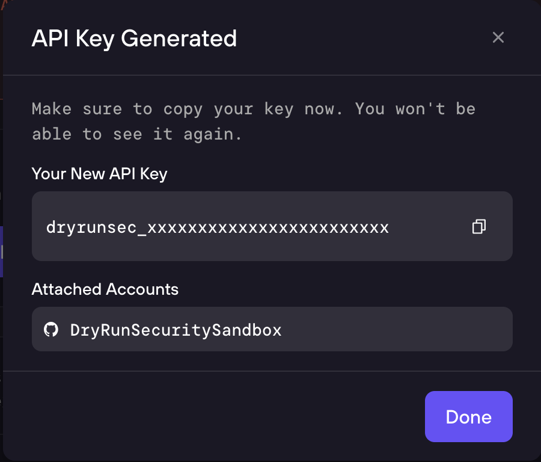
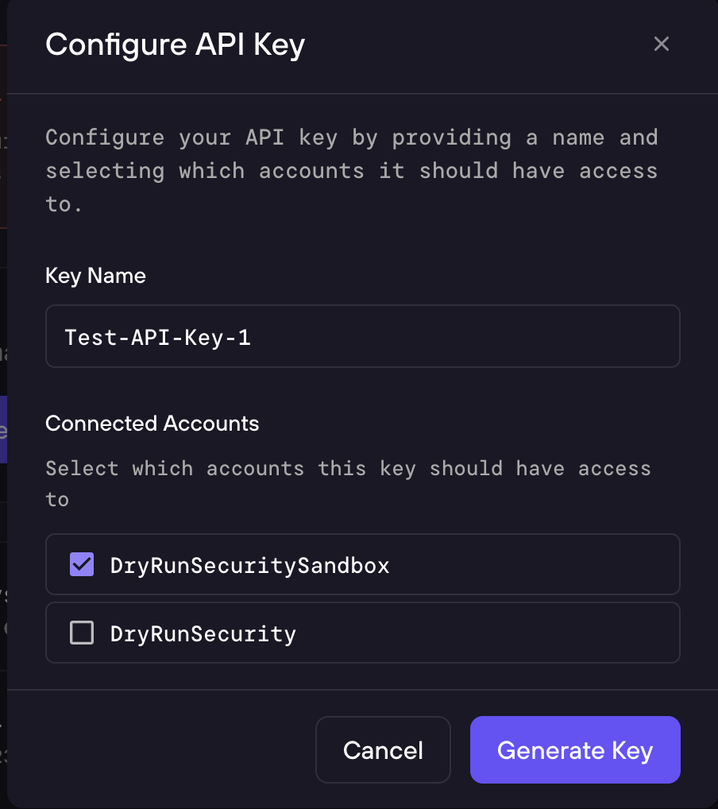

DryRun API
Programmatic access to DryRun Security findings, scans, configurations, and insights via the Simple API.
DryRun Simple API
The DryRun Simple API provides programmatic access to your organization's security data - findings, scans, deepscans, configurations, repositories, and insights.
- Swagger UI: https://simple-api.dryrun.security/api-docs/index.html
- OpenAPI (v3.0) spec: https://simple-api.dryrun.security/api-docs/v1/swagger.yaml
- Base URL:
https://simple-api.dryrun.security/v1
Authentication
All API requests require an API key generated from the DryRun Security dashboard.


Getting an API Key
Navigate to Settings > Access Keys in the sidebar at app.dryrun.security. The Access Keys page provides two sections:
- API Keys - Create and manage API keys for your applications. Click + Generate New API Key to create a new key.
- Your API Keys - View and manage your existing API keys. You can revoke any key at any time.
The API key must be scoped to at least one account. One API key can be used to access more than one account. After creating the key, copy it to a safe place - it will not be shown again.
Using Your API Key
Send your API key in the Authorization header using the Bearer scheme:
Authorization: Bearer dryrunsec_**********************Quick Start
Most endpoints are scoped to an account. You'll need:
account_id- provided by the DryRun Security platform (e.g.,12345678-1234-1234-1234-1234567890ab)repository_id- a UUID for a repository
Typical workflow:
- List your accessible accounts.
- Pick an account, then list repositories in that account.
- Use repository IDs to fetch scans and findings.
curl -H "Authorization: Bearer $DRYRUN_API_KEY" https://simple-api.dryrun.security/v1/accountsEndpoint Reference
Accounts
GET /v1/accounts - List all accounts accessible by the API key.
Repositories
GET /v1/accounts/{account_id}/repositories - List all repositories for an account.
Scans
GET /v1/accounts/{account_id}/repositories/{repository_id}/scans - List PR scans for a repository (supports filtering by status, date, and pagination).
GET /v1/accounts/{account_id}/repositories/{repository_id}/scans/{id} - Get detailed PR scan results including findings.
Findings
GET /v1/accounts/{account_id}/repositories/{repository_id}/findings - List all PR findings for a repository. Each finding includes a dashboard_url to view it in the DryRun Security dashboard.
Deepscans
GET /v1/accounts/{account_id}/deepscans - List all deepscans for an account.
GET /v1/accounts/{account_id}/repositories/{repository_id}/deepscans - List deepscans for a repository.
GET /v1/accounts/{account_id}/repositories/{repository_id}/deepscans/{deepscan_id}/results - List findings for a specific deepscan.
Configurations
GET /v1/accounts/{account_id}/configurations - List configurations for an account.
POST /v1/accounts/{account_id}/configurations - Create a new configuration.
PUT /v1/accounts/{account_id}/configurations/{id} - Update a configuration.
DELETE /v1/accounts/{account_id}/configurations/{id} - Delete a configuration.
Analyzers
GET /v1/accounts/{account_id}/analyzers - List available analyzers. Use the slug field as the key in configuration analyzer settings.
Custom Policies
GET /v1/accounts/{account_id}/custom_policies - List all Natural Language Code Policies for an account.
Insights
GET /v1/accounts/{account_id}/insights - Retrieve the daily insights digest. Insights are generated daily and highlight important security changes. Supports a date query parameter (YYYY-MM-DD).
Conventions
- IDs and scoping:
account_idis required for most endpoints.repository_idis required for repository-scoped endpoints. - Response shape: Most list endpoints return a top-level
dataarray. - Errors: If an item is not found, endpoints return
404with{"error": "not found"}.
Support
If you have questions about authentication, account access, or expected responses, contact DryRun Security support and include the endpoint URL you called, the HTTP status code, and the request_id header (if present).